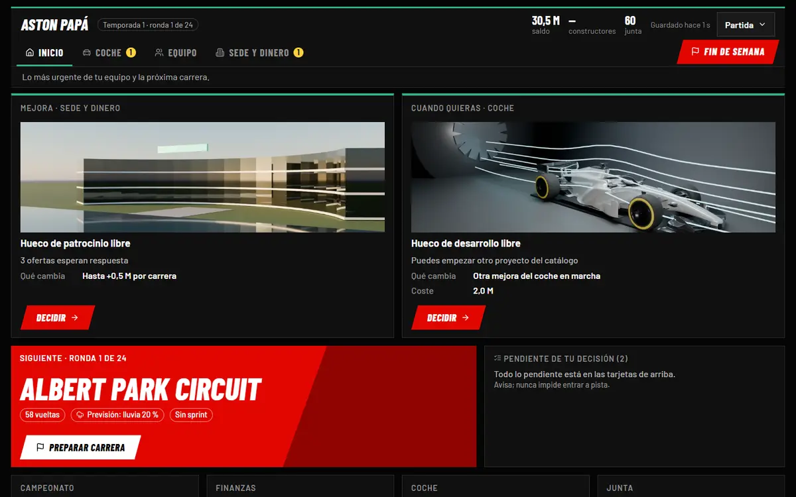
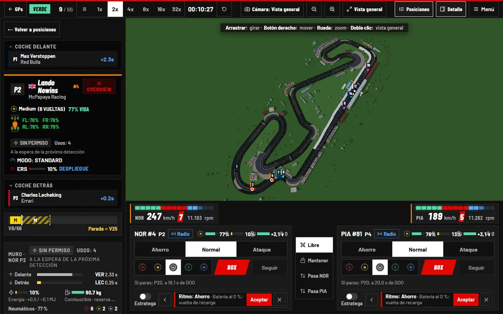
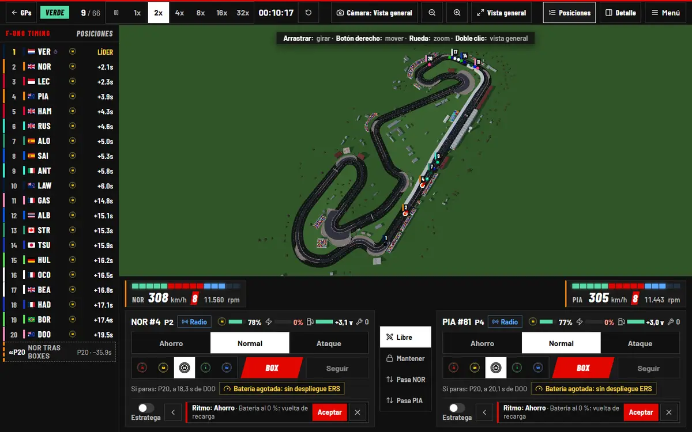
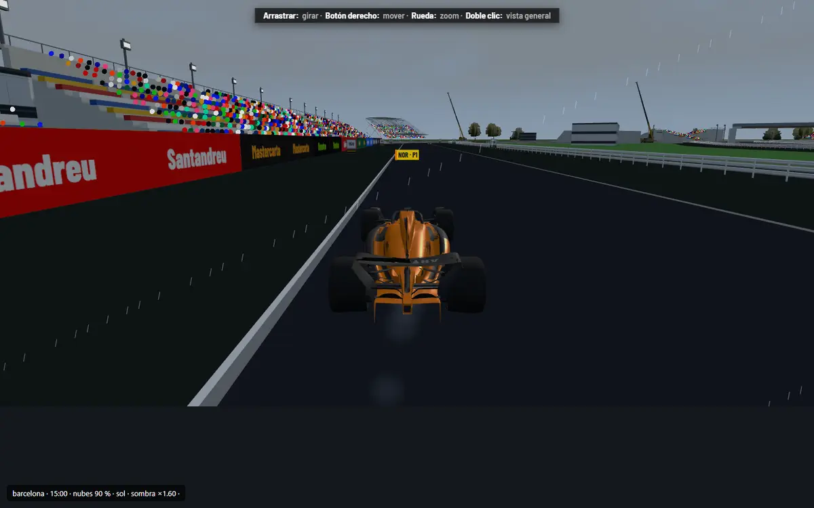
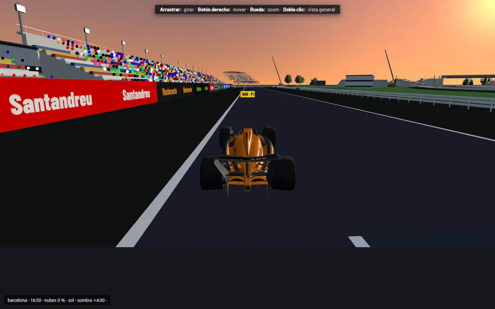
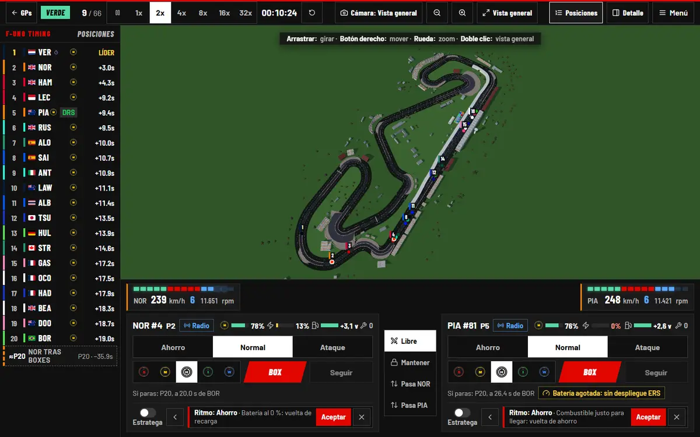

Pieza a pieza
F-Uno Sim es un simulador de estrategia de monoplazas que funciona entero en el navegador. No conduces: diriges el muro de tus dos coches. Baja y te lo desmontamos.
Cada pieza se gana
En el modo carrera, la fábrica prepara paquetes de mejoras uno detrás de otro: alerones, suelo, pontones, motor. El centro de temporada te señala la pieza que cambia con cada paquete y lo que cuesta.

Neumáticos que se gastan
Cada compuesto se degrada a su ritmo, y la pista se calienta con el sol y se enfría con las nubes. Desde el muro ves el desgaste vuelta a vuelta y decides cuándo parar y qué poner.

Debajo, el motor
Un V6 turbo híbrido, con su motor eléctrico, su batería y su escape. Desde el muro eliges el modo de motor y cuándo gastar la energía, y hablas por radio con tus pilotos mientras la carrera sigue.

El tiempo cambia la carrera
Llegan frentes de lluvia, la pista se moja y se seca poco a poco. Parar a tiempo por neumáticos de lluvia, o aguantar una vuelta más, es decisión tuya.

La carrera, en 3D
Cada circuito con su ambiente: luz de día, atardecer o noche, gradas con público y el agua que levantan los coches cuando llueve.

DRS
Ábrelo en la recta
En las zonas de DRS el alerón trasero se abre, el coche gana velocidad punta y adelantar es más fácil. La simulación lo tiene en cuenta en cada recta, vuelta a vuelta.

Ahora, al muro
Gratis, en el navegador y sin instalar nada. Una vez abierto, también funciona sin conexión.
Jugar